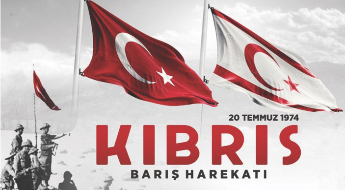

Kıbrıs Barış Harekatı
Kıbrıs Barış Harekatı, 20 Temmuz 1974 tarihinde Türkiye’nin Kıbrıs adasına düzenlediği askeri müdahaledir. Bu harekat, Ada’daki Türk toplumunu korumak ve Kıbrıs Cumhuriyeti’nde yaşanan siyasi krizi çözmek amacıyla gerçekleştirilmiştir. Kıbrıs Barış Harekatı’nın kökeni, Kıbrıs’ın 1960 yılında bağımsızlığını kazanmasından sonra ortaya çıkan etnik gerilimlere dayanmaktadır.

Kıbrıs, Osmanlı İmparatorluğu döneminde uzun süre Türk hakimiyetinde kalmış, ancak 1878 yılında Birleşik Krallık tarafından kiralanmış ve 1914 yılında ilhak edilmiştir. Ada, 1960 yılında bağımsız Kıbrıs Cumhuriyeti olarak ilan edilmiştir. Ancak, Rum ve Türk toplumları arasında yaşanan etnik gerilimler ve liderlik mücadelesi, Ada’nın istikrarını sürekli tehdit etmiştir.
1963 yılında Kıbrıs Cumhuriyeti’nin Rum Cumhurbaşkanı III. Makarios, anayasada değişiklikler yaparak Türk toplumunun haklarını sınırlamaya çalıştı. Bu girişimler, Türk toplumunun tepkisini çekmiş ve adada çatışmaların başlamasına yol açmıştır. 1964 yılında Birleşmiş Milletler (BM), Ada’ya barış gücü göndererek çatışmaları kontrol altına almaya çalışmıştır. Ancak, 1974 yılına gelindiğinde durum daha da kötüleşmiştir.
15 Temmuz 1974 tarihinde, Kıbrıs Rum Milli Muhafız Ordusu tarafından gerçekleştirilen bir darbe ile Cumhurbaşkanı Makarios devrilmiş ve yerine Nikos Sampson getirilmiştir. Bu darbe, Kıbrıs’ın Yunanistan’a bağlanmasını (Enosis) amaçlayan bir harekettir. Darbe, Kıbrıs Türk toplumunda büyük bir endişe ve korku yaratmış, Türkiye’nin müdahalesini zorunlu hale getirmiştir. Türkiye, Kıbrıs’taki Türk toplumunun güvenliğini sağlamak ve anayasal düzeni yeniden tesis etmek amacıyla 20 Temmuz 1974 tarihinde “Kıbrıs Barış Harekatı” adıyla bir askeri müdahale başlatmıştır. Harekat, uluslararası hukukun 1960 Garanti Antlaşması’na dayandırılmıştır. Bu antlaşma, Türkiye, Yunanistan ve Birleşik Krallık’a, Kıbrıs’ta anayasal düzenin bozulması durumunda müdahale etme hakkı tanımaktadır.
20 Temmuz sabahı Türk birlikleri, Girne kıyılarından adaya çıkartma yapmış ve hızla ilerleyerek önemli stratejik noktaları ele geçirmiştir. İlk harekat, 22 Temmuz’da ateşkesle sona ermiş ancak barış görüşmeleri sonuçsuz kalmıştır. Bunun üzerine, 14 Ağustos’ta ikinci bir harekat başlatılmıştır. İkinci harekat sonucunda, Türk kuvvetleri adanın yaklaşık %37’sini kontrol altına almıştır. Kıbrıs Barış Harekatı’nın ardından Ada, fiilen ikiye bölünmüştür. Kuzeyde Türkler, güneyde ise Rumlar yaşamaktadır. 1983 yılında, Kuzey Kıbrıs Türk Cumhuriyeti (KKTC) ilan edilmiş ancak bu devlet, Türkiye dışında uluslararası alanda tanınmamıştır. Ada’daki barış görüşmeleri ve birleşme çabaları yıllarca devam etmiş, ancak kalıcı bir çözüm bulunamamıştır.
Harekat, uluslararası alanda geniş yankı uyandırmış ve çeşitli tepkilere neden olmuştur. Birleşmiş Milletler, durumu kınayarak adaya barış gücü göndermiştir. ABD ve Batı Avrupa ülkeleri, Türkiye’ye karşı ambargo uygulamış ancak bu ambargolar zamanla kaldırılmıştır. Kıbrıs Barış Harekatı, Türk dış politikasında önemli bir dönüm noktasıdır. Türkiye’nin kendi güvenlik ve ulusal çıkarlarını koruma konusundaki kararlılığını göstermiştir. Aynı zamanda, Kıbrıs Türk toplumunun varlığını sürdürmesi ve güvenliğinin sağlanması açısından kritik bir rol oynamıştır.
Sonuç olarak, Kıbrıs Barış Harekatı, Kıbrıs tarihinin dönüm noktalarından biri olmuş ve günümüze kadar süregelen Kıbrıs sorununun temel taşlarını oluşturmuştur. Ada’daki iki toplum arasındaki gerilim ve barış arayışı, halen çözülmeyi bekleyen önemli bir mesele olarak varlığını sürdürmektedir.